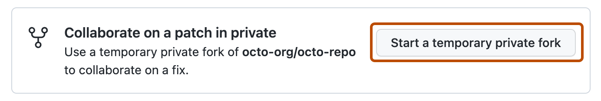
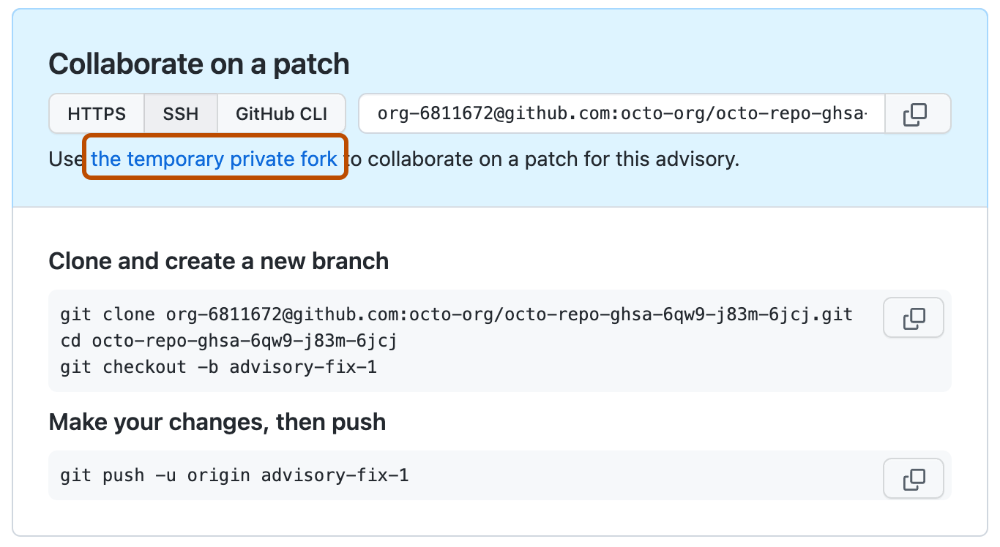
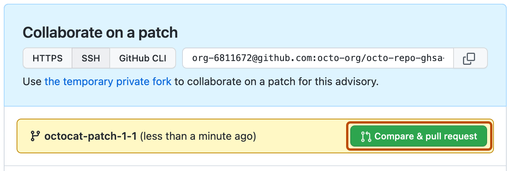
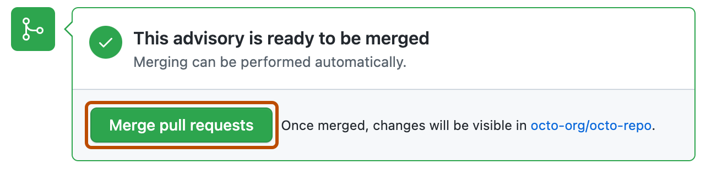

You can create a temporary private fork to privately collaborate on fixing a security vulnerability in your public repository.
Note
This article applies to repository-level security advisories in a public repository.
To edit a global advisory in the GitHub Advisory Database, see Editing security advisories in the GitHub Advisory Database.
Before you can collaborate in a temporary private fork, you must create a draft security advisory. For more information, see Creating a repository security advisory.
To keep information about vulnerabilities secure, integrations, including CI, cannot access temporary private forks.
On GitHub, navigate to the main page of the repository.
Under the repository name, click the Security and quality tab. If you cannot see the " Security and quality" tab, select the dropdown menu, and then click Security and quality.
In the left sidebar, under "Reporting", click Advisories.
In the "Security Advisories" list, click the name of the security advisory you'd like to create a temporary private fork in.
Scroll to the bottom of the advisory form and click Start a temporary private fork.

A private fork of the repository is created and shown on the advisory page.
The naming convention for the private fork is very similar to the convention used for advisories in the GitHub Advisory Database and follows this format: repo-ghsa-xxxx-xxxx-xxxx, where:
repo is the name of the repository. To stay under the 100 character limit on repository names, we truncate the original repository's name to 80 characters.xxxx-xxxx-xxxx is the unique identifier of the draft security advisory:
x is a letter or a number from the following set: 23456789cfghjmpqrvwx.For example, if you create a temporary private fork in a repository called octocat-repo, and the automatically generated ID for the draft advisory is GHSA-x854-cvjg-vx26, the temporary fork will be called octocat-repo-ghsa-x854-cvjg-vx26.
You can also use the REST API to create temporary private forks. For more information, see Create a temporary private fork in the REST API documentation.
Anyone with admin permissions to a security advisory can add additional collaborators to the security advisory, and collaborators on the security advisory can access the temporary private fork. For more information, see Adding a collaborator to a repository security advisory.
Anyone with write permissions to a security advisory can collaborate on a patch by committing changes to a temporary private fork.
On GitHub, navigate to the main page of the repository.
Under the repository name, click the Security and quality tab. If you cannot see the " Security and quality" tab, select the dropdown menu, and then click Security and quality.
In the left sidebar, under "Reporting", click Advisories.
In the "Security Advisories" list, click the name of the security advisory you'd like to work on.
You can make your changes on GitHub or locally:

Anyone with write permissions to a security advisory can create a pull request from a temporary private fork.
On GitHub, navigate to the main page of the repository.
Under the repository name, click the Security and quality tab. If you cannot see the " Security and quality" tab, select the dropdown menu, and then click Security and quality.
In the left sidebar, under "Reporting", click Advisories.
In the "Security Advisories" list, click the name of the security advisory you'd like to create a pull request in.
Scroll to the bottom of the advisory form. Then, under "Collaborate on a patch", click Compare & pull request to create a pull request for the associated branch.

To create a pull request that is ready for review, click Create Pull Request.
To create a draft pull request, use the drop-down and select Create Draft Pull Request, then click Draft Pull Request. If you are the member of an organization, you may need to request access to draft pull requests from an organization owner. See About pull requests.
You cannot merge individual pull requests in a temporary private fork. Instead, you merge all open pull requests at once, in the corresponding security advisory. For more information, see Merging changes in a security advisory.
Anyone with admin permissions to a security advisory can merge changes in a security advisory.
You cannot merge individual pull requests in a temporary private fork. Instead, you merge all open pull requests at once, in the corresponding security advisory.
Before you can merge changes in a security advisory, every open pull request in the temporary private fork must be mergeable. To keep information about vulnerabilities secure, status checks do not run on pull requests in temporary private forks. For more information, see About protected branches.
Additionally, there can be no merge conflicts, and GitHub won't enforce any of the protection rules that you may have set up for the branch you're trying to merge the changes in to.

Note
You can only merge one pull request into the main branch of a temporary private fork. If more than one pull request targets the main branch, merging is blocked.
After you merge changes in a security advisory, you can publish the security advisory to alert your community about the security vulnerability in previous versions of your project. For more information, see Publishing a repository security advisory.